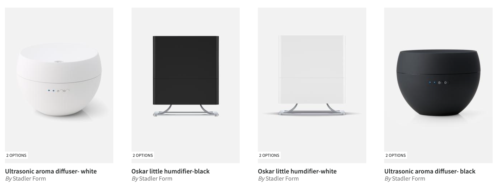
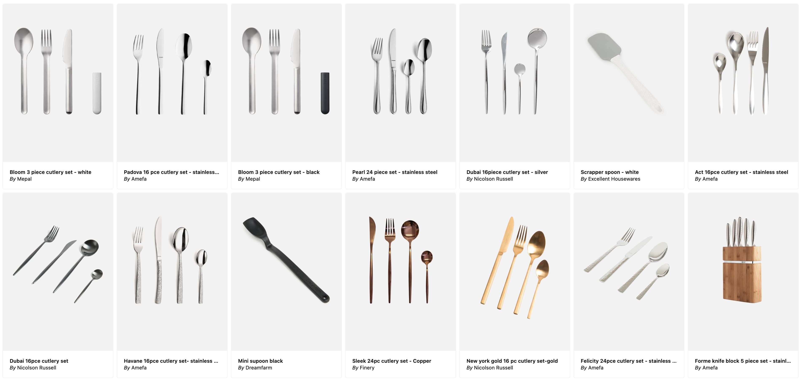
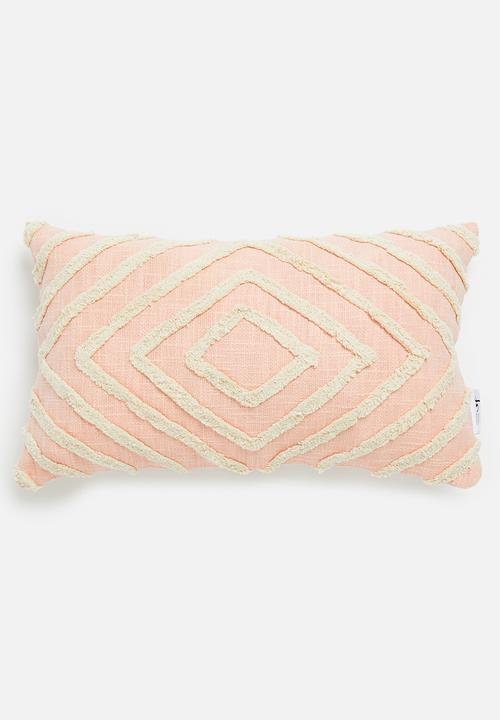
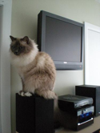

!pip install datasets transformersHow to build your own semantic search engine
Leverage open-source AI to create a simple yet powerful semantic search engine.

I built a semantic search engine named Meepo for a local (South African 🇿🇦) eCommerce store. Thanks to the power and availability of foundational neural networks, open-source software, and cloud infrastructure – along with a touch of good planning – the entire process took me just one week, and it costs me a mere $30 per month to host.
Honestly, it blows my mind that this is possible. Decades of hard work by some of the brightest minds have enabled us to create and distribute incredible AI-powered products from almost anywhere in the world.
In this post, I show you how to build your own semantic search engine.
By the end of the post you’ll be able to search through a dataset of pet images for queries as obscure as “a fluffy pink cat on a tv” – and it’ll work! We’ll get there in two parts:
- Part 1: Background. We discuss why you might need semantic search over regular search, how the underlying technique works, and its little-known roots in the medical domain.
- Part 2: Let’s build a search engine for the Oxford Pets dataset. We build our own CLIP-based semantic search engine from scratch. We use a dataset with a good size and complexity to demonstrate the power of CLIP without slowing down iteration. However, I urge you to try it out on your own dataset too!
Part 1: Background
Why do we need semantic search?
I built Meepo out of frustration with existing search engines. I needed a fork, so naturally I tried to search “fork” on my favourite online store… but the result contained only 4 items – none of which resemble a fork at all!

It turns out, you have to search “cutlery” instead, because that’s how the items happen to be tagged in the store’s catalogue.
On the other hand, here are the first few results with Meepo. So many forks!

Not only can you find forks, you can also use colors, textures, patterns, and more!
For example, here is the top search result for “fluffy striped salmon pillow”:

Incredible! And even more incredible is how easy it was to build thanks to a powerful and open-source technology: contrastive language-image pretraining.
What’s CLIP?
Contrastive Language-Image Pretraining (CLIP) is a technique for training neural networks that beat the state-of-the-art zero-shot performance on a variety of tasks using mixed image and text data.1 By “zero-shot” we mean that the model was not trained on any examples from a given dataset.
1 Fast forward two years and CLIP has been dethroned several times. Most recently by BLIP-2, which builds on top of off-the-shelf models instead of training from scratch.

The idea is to pretrain a neural network to predict the most relevant text snippet given an image and vice versa.
But the trick is to use a contrastive rather than predictive objective.
What does that mean?
A predictive objective takes an input image and tries to predict its corresponding text snippet.
On the other hand, a contrastive objective predicts a vector2 for each image and another vector for each text snippet; these vectors are called embeddings. It does so in such a way that corresponding image and text vectors are more similar (according to some chosen similarity function) and non-corresponding image and text vectors are less similar.
2 Vectors are well-studied mathematical objects, however, it’s often sufficient to think of a vector as a list of numbers.
OpenAI found that a contrastive objective reached the same zero-shot ImageNet accuracy as the predictive objective while using 4x fewer training examples!
ConVIRT: The little-known medical roots of CLIP
A little-known fact is that CLIP is a scaled up version of another technique called ConVIRT (Zhang et al. 2020), which demonstrated the approach on 217k medical image-text pairs (~2000x fewer than CLIP).

Despite being acknowledged in the CLIP paper, I hadn’t heard of ConVIRT until I read the CLIP paper myself:
[…] we create a new dataset of 400 million (image, text) pairs and demonstrate that a simplified version of ConVIRT trained from scratch, which we call CLIP, for Contrastive Language-image Pre-training, is an efficient method of learning from natural language supervision.
As with most machine learning innovations, it all starts with data. High-quality annotations of medical images are expensive to make.
ConVIRT’s key insight was to mine doctor’s reports in their natural language format for image-text pairs.
OpenAI’s later contribution was largely an engineering effort. They scaled ConVIRT up to a dataset 2000x larger – 400 million examples in total! This is of course a mighty task which I don’t mean to understate either.
Now that we have some background on CLIP and its impressive zero-shot capabilities, how do we actually use it to create a semantic search engine like Meepo?
Part 2: Let’s build a CLIP search engine for the Oxford Pets dataset
In this section, we’ll build our own CLIP-based semantic search engine on the Oxford Pets dataset.
I chose the Oxford Pets dataset since it’s a good size and complexity to demonstrate the power of CLIP, but I urge you to try this out on your own dataset too.
We’ll do this in two parts. First, we’ll use CLIP as a convenient zero-shot classifier, and then we’ll show how search requires even fewer steps. By the end of the section you will be able to search for queries as obscure as “a fluffy pink cat on a tv” – and it’ll work!
The Oxford Pets dataset
First install these required libraries:
- HuggingFace Datasets: easily access and share datasets for a variety of machine learning tasks
- HuggingFace Transformers: easily download, train, and use state-of-the-art pretrained neural networks.
Then load the Oxford Pets dataset – thanks to Pedro Cuenqa for uploading it:
from datasets import load_dataset
dataset = load_dataset("pcuenq/oxford-pets")One of the most important rules of machine learning is to always look at the data. This is quite easy with images, since we can just show the image.
Let’s define a helper function to show thumbnails of an image:
import numpy as np
def thumbnail(image, scale=3):
return image.resize(np.array(image.size)//scale)Here’s an example of a cat:
cat_row = dataset['train'][15]
cat_image = cat_row['image']
thumbnail(cat_image)
… and here’s an example of a dog:
dog_row = dataset['train'][10]
dog_image = dog_row['image']
thumbnail(dog_image)
Using CLIP for zero-shot classification
Now that we have a dataset, we can load the CLIP processor and model. The concept of having a separate processor and model is central to the HuggingFace Transformers library, since it allows us to use 174 state-of-the-art models (as of writing this article) with a very similar API.
Note that it might take a minute to download the pretrained weights:
from transformers import CLIPProcessor, CLIPModel
processor = CLIPProcessor.from_pretrained("openai/clip-vit-base-patch32")
model = CLIPModel.from_pretrained("openai/clip-vit-base-patch32")The CLIPProcessor prepares the inputs for the CLIPModel which can then be used to obtain embedding vectors. Let’s create a function to embed an image by first passing it through the processor and then into the model:
import torch
def embed_image(images):
if not isinstance(images, list): images = [images]
inputs = processor(images=images, return_tensors="pt", padding=True)
with torch.no_grad(): return model.get_image_features(**inputs)Test that it works:
images = [cat_image, dog_image]
image_embs = embed_image(images)
image_embs.shapetorch.Size([2, 512])You can also pass text to the CLIPProcessor. Let’s create a similar function to embed text inputs:
def embed_text(text):
inputs = processor(text=text, return_tensors="pt", padding=True)
with torch.no_grad(): return model.get_text_features(**inputs)text_embs = embed_text([f"a photo of a {cls}" for cls in ["cat", "dog"]])
text_embs.shapetorch.Size([2, 512])We can now use embeddings for zero-shot classification by using text inputs that represent the different classes, and then calculating the cosine similarity between image embeddings and text embeddings.
Cosine similarity is calculated by taking the dot product of normalized vectors:
def normalize(a): return a / a.norm(dim=-1, keepdim=True)
def cosine_sim(a, b): return normalize(a) @ normalize(b).Tcosine_sim(image_embs, text_embs)tensor([[0.2639, 0.2127],
[0.1962, 0.2553]])Note how the similarity between the cat image and the text “a photo of a cat” (0.2639) is higher than the similarity between the cat image and the text “a photo of a dog” (0.2127), and similarly for the dog image in the next row of the tensor.
We can convert these similarities to probabilities by using the model’s logit_scale parameter followed by the softmax method:
def logits(a, b): return model.logit_scale.exp() * cosine_sim(a, b)
def probs(a, b): return logits(a, b).softmax(dim=0)probs(text_embs, image_embs)tensor([[0.9940, 0.0027],
[0.0060, 0.9973]], grad_fn=<SoftmaxBackward0>)We see a probability of 0.994 that the image of a cat is in fact a cat, and a probability of 0.997 that the image of a dog is in fact a dog. Pretty good!
Since this is a zero-shot classifier, we can very easily generalize it to arbitrary classes! Let’s make a convenient wrapper to do exactly that:
def classify(image, classes, template="a photo of a {}"):
image_embs = embed_image(image)
text_embs = embed_text([template.format(o) for o in classes])
return probs(text_embs, image_embs)To use this, simply pass in a list of classes. You can also customize the template, which can improve the classification accuracy.
Here’s how we can classify the breed of a cat:
cat_breeds = sorted({row["label"] for row in dataset["train"] if not row["dog"]})
scores = classify(cat_image, cat_breeds, "a photo of a {} cat")
scorestensor([[1.2116e-05],
[5.4131e-06],
[4.6950e-02],
[1.9504e-06],
[2.1754e-02],
[1.7998e-04],
[9.0918e-04],
[9.1228e-01],
[1.7194e-02],
[4.6431e-05],
[5.8636e-04],
[7.8781e-05]], grad_fn=<SoftmaxBackward0>)idx = torch.argmax(scores)
cat_breeds[idx], scores[idx].item()('Persian', 0.9122824668884277)… and here’s how we can classify the color of any animal:
classes = ["black", "white", "red", "green", "yellow", "blue", "brown", "orange", "pink", "purple", "grey"]
scores = classify(cat_image, classes, "a photo of a {} animal")
idx = torch.argmax(scores)
classes[idx], scores[idx].item()('white', 0.8672362565994263)It works – and it’s super convenient too!
Using CLIP for image retrieval
Using CLIP for search is not too different from using it for zero-shot classification. In fact, search is even simpler! We don’t need to calculate probabilities since we ultimately only care about the order of items:
def search(image_embs, query_embs):
sims = cosine_sim(image_embs, query_embs).flatten()
indices = sims.argsort(descending=True)
return indices, sims[indices]indices, sims = search(image_embs, embed_text("a photo of a cat"))
indices, sims(tensor([0, 1]), tensor([0.2639, 0.1962]))for i in indices: display(thumbnail(images[i]))

Let’s try that with a bigger dataset and some more interesting queries:
Let’s embed all of the images. Since this took quite a while on my laptop (19 minutes), it’s convenient to cache the result to disk so that we don’t slow down iteration in our notebook:
from pathlib import Path
from tqdm.notebook import tqdmall_image_embs_path = Path("oxford_pets_embeddings.npy")
if all_image_embs_path.exists():
all_image_embs = torch.tensor(np.load(all_image_embs_path))
else:
all_image_embs = [embed_image(row['image']) for row in tqdm(dataset['train'])]
np.save(all_image_embs_path, embs)all_image_embs.shapetorch.Size([7390, 512])def search_and_display(image_embs, query_embs, k=3):
indices, _ = search(image_embs, query_embs)
for i in indices[:k]:
image = dataset["train"][i.item()]["image"]
display(thumbnail(image))search_and_display(all_image_embs, embed_text("a photo of a white puppey on the grass"))

Amazing! I wonder how obscure we can get?
search_and_display(all_image_embs, embed_text("a photo of a fluffy pink cat on a tv"))


It always surprises me how well this works! 🤯
And once again, it’s super flexible. For example, all we need to change in order to use an image query is to pass the image’s embeddings instead of text embeddings!
Let’s find the most similar images to our fluffy white persian cat from earlier:
search_and_display(all_image_embs, embed_image(cat_image))

Your turn
Now it’s your turn. Dive into the accompanying notebook for this post and give it a try with your own dataset!
If you found this enjoyable, consider giving it a thumbs up below, commenting, and following me @wasimlorgat on Twitter. The positive feedback really helps me get a sense of what readers find valuable!
Thanks
Many thanks to Kurian Benoy for his kind and thoughtful comments on early versions of this post.